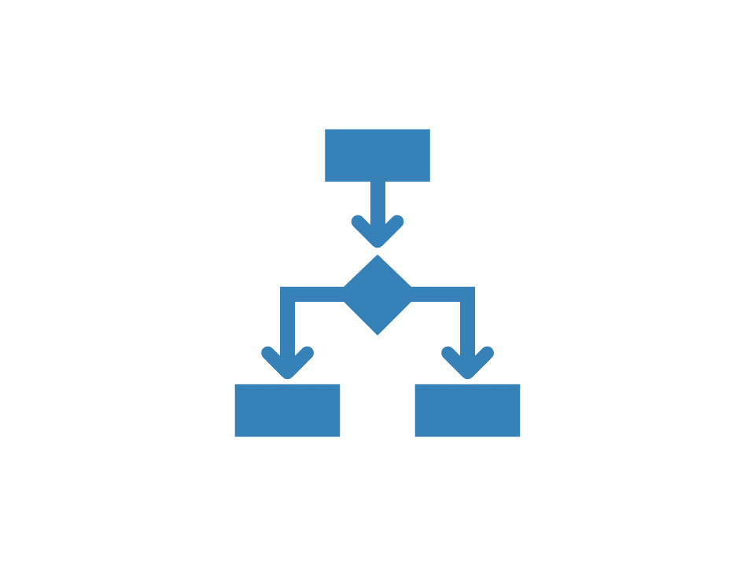

bupaR Docs | Performance Maps

Performance profile
library(bupaverse)Instead of a frequencies, process maps can also be
used to visualize performance of the process, by using
performance() to configure the map, instead of
frequency().
patients %>%
process_map(performance())There are three different parameters specific to the
performance() configuration: the aggregation function, the
time units, and the flow time type.
Aggregation function
The FUN argument specifies the aggregation function to
apply on the processing time (e.g. min, max, mean, median, etc.). By
default, the mean durations are shown. We can adjust this to
the maximum, for example.
patients %>%
process_map(performance(FUN = max))Any function that takes a numerical vector and returns a single value can be used. For example, let’s say we want to show the 0.90 percentile.
p90 <- function(x, ...) {
quantile(x, probs = 0.9, ...)
}
patients %>%
process_map(performance(FUN = p90))Note that the ... is mandatory as
process_map() will automatically add na.rm = T
to the aggregation function call.
Time units
The units argument allows to specify the time units to
be used.
patients %>%
process_map(performance(mean, "days"))patients %>%
process_map(performance(mean, "hours"))Flow time type
Finally, you can set the flowt_time argument.
There are two different duration types that can be displayed on the edges:
idle_time: the time between the end of the source activity, and the start of the target activity. Can be negative if the source activity overlaps with the target activity.inter_start_time: the time between the start of the source- and target activities, including the duration of the from-activity.
Read more:
Copyright © 2023 bupaR - Hasselt University